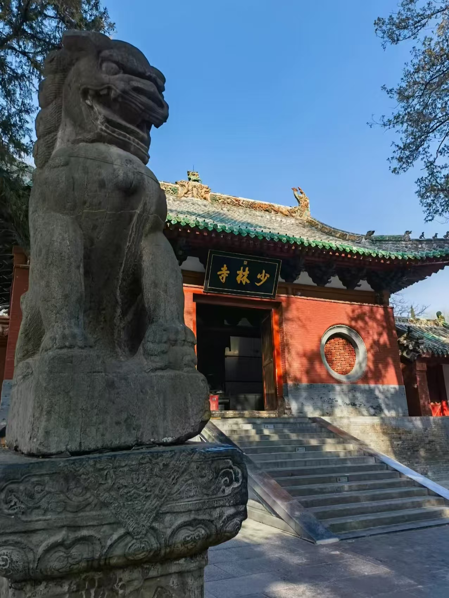
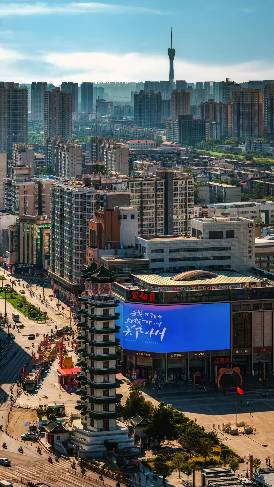
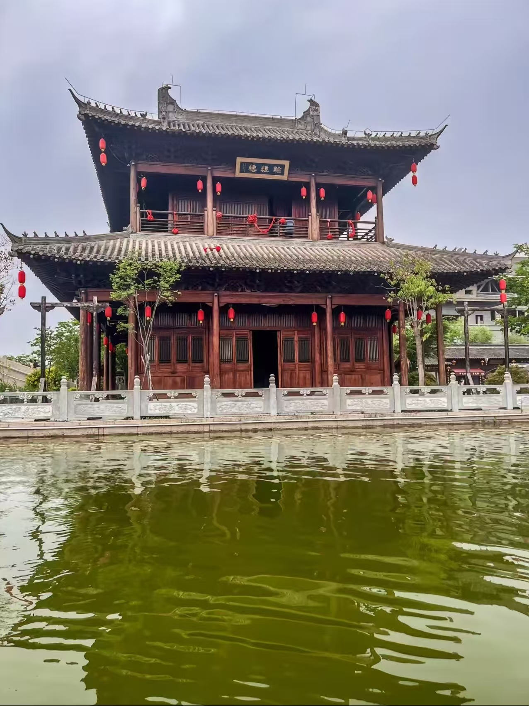
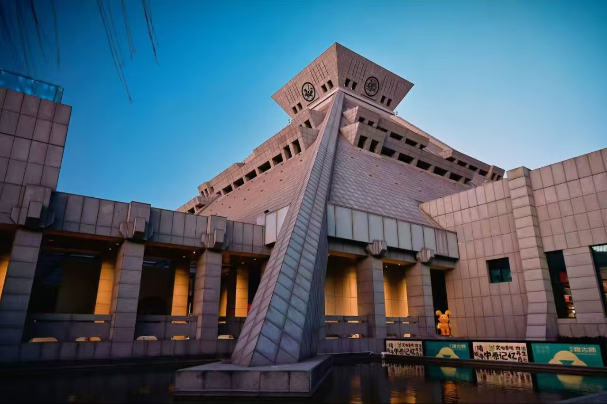
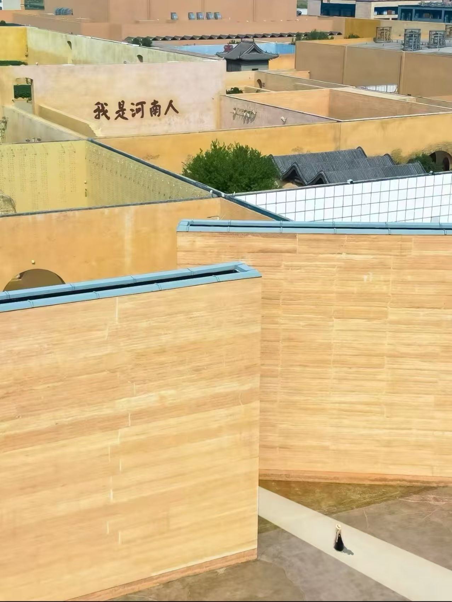
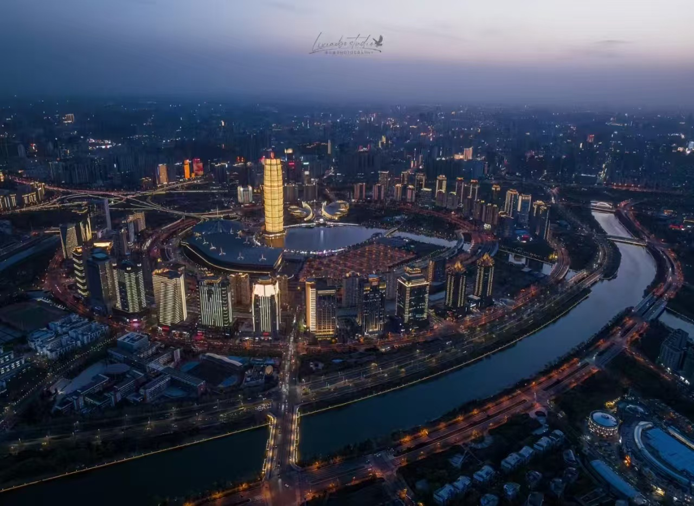
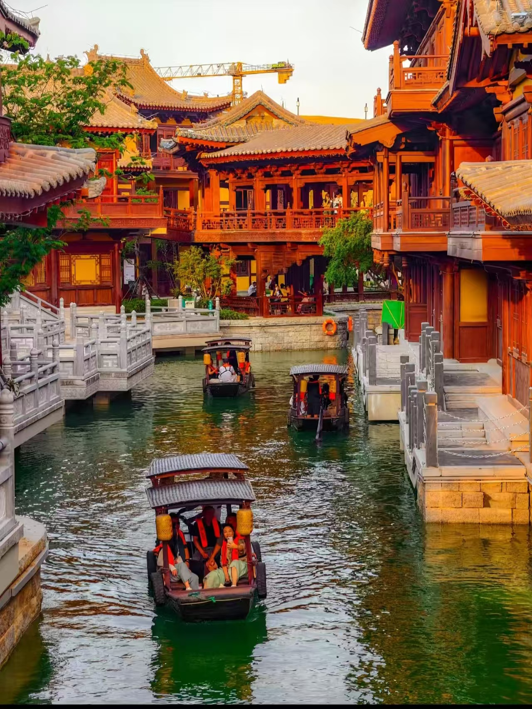

Shaolin Temple
Famous around the world for kung fu and Zen culture, Shaolin Temple is one of the most iconic destinations near Zhengzhou.
Travel • Culture • Discovery
Located in the heart of China, Zhengzhou blends thousands of years of civilization with vibrant urban life. It is a place where history lives on, modern attractions keep growing, and every journey feels full of discovery.
Start Exploring
Why Visit Zhengzhou
Zhengzhou is one of the most important cities in central China. It offers a rich mix of cultural landmarks, exciting attractions, natural scenery, and authentic local food. Whether you enjoy history, photography, architecture, or city exploration, Zhengzhou has something memorable to offer.

History & Culture
Zhengzhou stands at the heart of Chinese civilization. The city is closely connected to the history of the Central Plains and serves as a gateway to some of the region’s most meaningful cultural landmarks.
Visitors can explore the legendary Shaolin Temple and Mount Song, admire the treasured collections of the Henan Museum, and experience the deep historical identity that makes Zhengzhou both powerful and memorable.
Top Attractions

Famous around the world for kung fu and Zen culture, Shaolin Temple is one of the most iconic destinations near Zhengzhou.

Discover ancient bronzes, ceramics, and cultural treasures that reveal the story of early Chinese civilization.

A dramatic cultural attraction that combines architecture, storytelling, and immersive theatre in a striking way.

Modern Experiences
Zhengzhou is not only about the past. It also offers modern leisure and entertainment experiences that bring a fresh side of the city to life.
Visit Jianye Movie Town for vintage street scenes and photo spots, enjoy immersive performances at Only Henan, or spend a fun day at Fantawild for rides, lights, and excitement.
Nature & Scenery
Beyond its urban rhythm, Zhengzhou also offers scenic places where travelers can slow down and enjoy nature. The Yellow River Cultural Park presents broad views and powerful symbols of Chinese heritage, while nearby mountain areas such as Fuxi Mountain bring fresh air, dramatic landscapes, and a peaceful atmosphere.

Local Flavor
A city becomes even more unforgettable through its food. In Zhengzhou, local dishes reflect comfort, tradition, and everyday life.
From a steaming bowl of Henan braised noodles to the bold flavor of hot pepper soup, local cuisine brings warmth and character to every meal. Street snacks and night markets also add a lively, welcoming atmosphere.